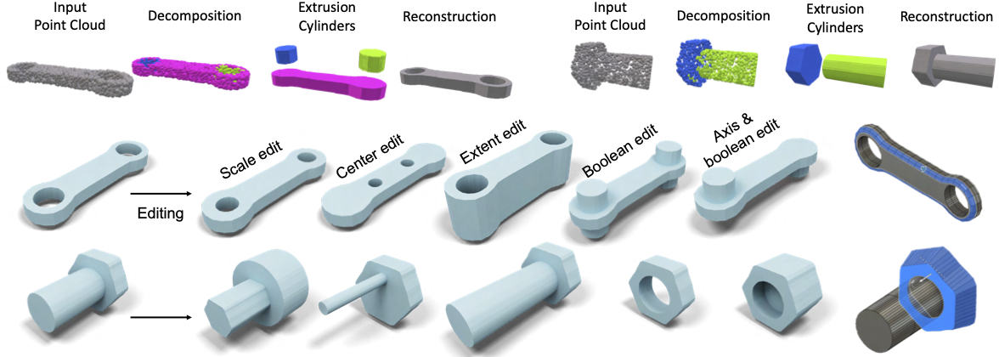
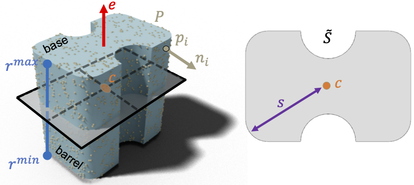
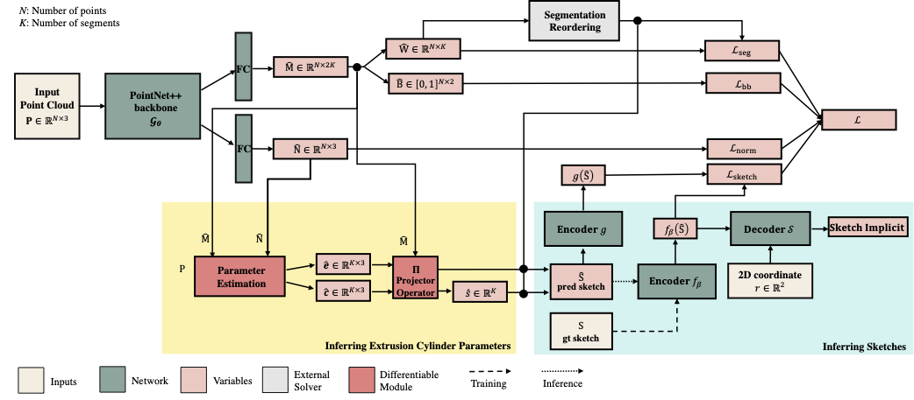
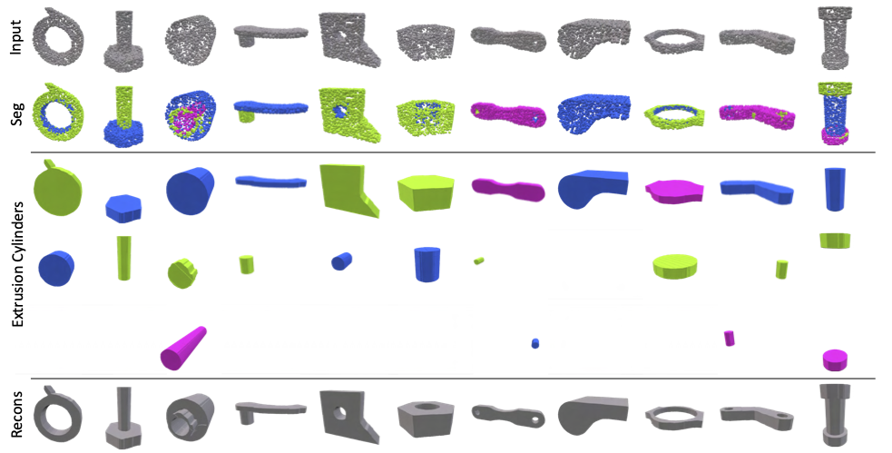
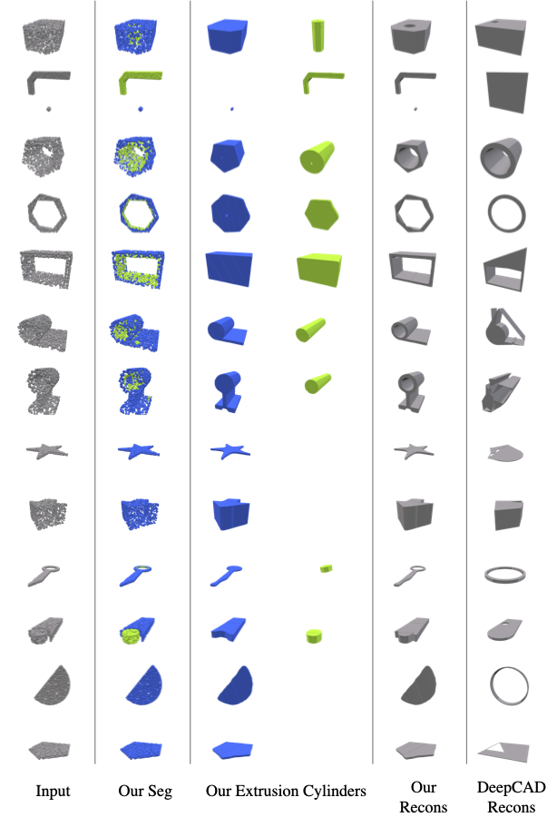

Conference on Computer Vision and Pattern Recognition (CVPR), 2022

Point2Cyl takes a raw point cloud as input and decomposes it into extrusion cylinders while predicting all parameters including the extrusion axis, extent, and the 2D sketch (first row). The output set of extrusion cylinders can be loaded in CAD software and is editable in various ways thus creating a wide array of variations (second and third rows).
Abstract
We propose Point2Cyl, a supervised network transforming a raw 3D point cloud to a set of extrusion cylinders. Reverse engineering from a raw geometry to a CAD model is an essential task to enable manipulation of the 3D data in shape editing software and thus expand their usages in many downstream applications. Particularly, the form of CAD models having a sequence of extrusion cylinders — a 2D sketch plus an extrusion axis and range — and their boolean combinations is not only widely used in the CAD community/software but also has great expressivity of shapes, compared to having limited types of primitives (e.g., planes, spheres, and cylinders). In this work, we introduce a neural network that solves the extrusion cylinder decomposition problem in a geometry-grounded way by first learning un- derlying geometric proxies. Precisely, our approach first predicts per-point segmentation, base/barrel labels and nor- mals, then estimates for the underlying extrusion param- eters in differentiable and closed-form formulations. Our experiments show that our approach demonstrates the best performance on two recent CAD datasets, Fusion Gallery and DeepCAD, and we further showcase our approach on reverse engineering and editing.
Reverse engineering from a raw geometry to a CAD model is an essential task to enable manipulation of the 3D data. We introduce a novel geometry-aware approach that casts the problem as an extrusion cylinder decomposition problem.
Extrusion Cylinder

We predict geometric proxies, which are used to estimate extrusion parameters in differentiable and closed-form formulations. Namely, our geometric proxies are i) extrusion cylinder segmentation, ii) per-point normals
and iii) base-barrel segmentation, which are used to derive the extrusion cylinder parameters which are a) extrusion axis, b) extrusion center, c) normalized sketch, d) sketch scale and e) extrusion extent.
Our Network Architecture

Network architecture of our Point2Cyl.
Qualitative Results

Qualitative examples for reconstruction. Figure shows (top-to-bottom) (1) input point clouds, (2) our predicted segmentation, (3-5) corresponding set of extrusion cylinders and (6) our final reconstruction. This figure also illustrates that individual extrusion cylinders from our decomposition result from a variety of closed loops.

Qualitative examples from our Point2Cyl on the DeepCAD dataset. We also show comparisons with the conditional generation extension to DeepCAD and show that our approach result in output models that better match the input.
Citation
@inproceedings{uy-point2cyl-cvpr22,
title = {Point2Cyl: Reverse Engineering 3D Objects from Point Clouds to Extrusion Cylinders},
author = {Mikaela Angelina Uy and Yen-yu Chang and Minhyuk Sung and Purvi Goel and Joseph Lambourne and Tolga Birdal and Leonidas Guibas},
booktitle = {Conference on Computer Vision and Pattern Recognition (CVPR)},
year = {2022}
}
Acknowledgements
This work is supported by ARL grant W911NF-21-2-0104, a Vannevar Bush Faculty Fellowship, and gifts from the Autodesk and Adobe corporations. M. Sung also acknowledges the support by NRF grant (2021R1F1A1045604) and NST grant (CRC 21011) funded by the Korea government(MSIT) and grants from the Adobe and KT corporations.